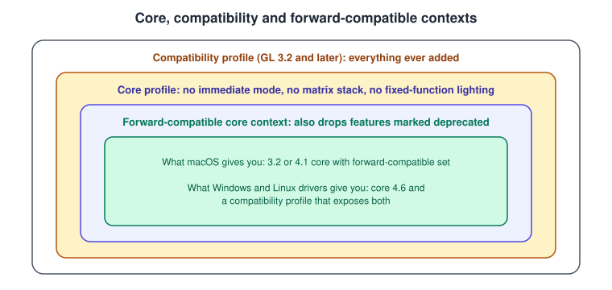
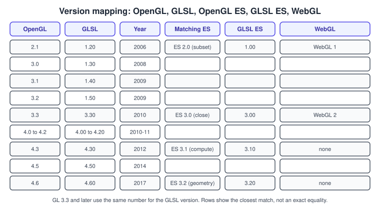

Versions, Profiles and Extensions
|
This content was generated with the assistance of AI and should be verified against the official documentation before being relied on in production. |
Every OpenGL program starts by asking for a context of some version and profile, and every later decision (which functions exist, which shader version to write, which features are optional) follows from what that request returned. This page explains the version scheme, what the profiles are, how a 4.6 context differs from the 4.1 one a Mac gives you, how extensions extend a context without changing its version and how to query all of it at run time.
The facts were checked in November 2026. The versions documented are OpenGL 4.6 (first released in 2017, specification revision dated 5 May 2022) with GLSL 4.60 (specification dated 14 August 2023), OpenGL ES 3.2 with GLSL ES 3.20 and EGL 1.5. The code is C++20 with glad2 and GLFW, set up as in Getting Started on the Desktop. The status of OpenGL on each platform is in OpenGL in 2026.
The version scheme
OpenGL versions are written major.minor. A context of version 4.1 offers the functionality of 4.1 and everything before it that
the chosen profile keeps. Minor releases appeared roughly once a year from 3.1 to 4.6, and each one mostly promoted extensions
that had matured: a feature appears as an ARB extension, is tested in drivers, and enters the core in a later version.
| Version | Year | Headline additions |
|---|---|---|
2.0 |
2004 |
Programmable shaders (GLSL 1.10), multiple render targets. |
3.0 |
2008 |
Framebuffer objects, vertex array objects, integer textures; first deprecation of fixed function. |
3.1 |
2009 |
Fixed-function features removed from the core API; uniform buffer objects, instancing. |
3.2 |
2009 |
Core and compatibility profiles, geometry shaders, sync objects. |
3.3 |
2010 |
GLSL 3.30, sampler objects, instanced arrays; aligns with ES 3.0 features. |
4.0 |
2010 |
Tessellation shaders, transform feedback objects. |
4.1 |
2010 |
Separate shader objects, program binaries; the last version macOS offers. |
4.2 |
2011 |
Image load/store, immutable texture storage. |
4.3 |
2012 |
Compute shaders, shader storage buffers, |
4.4 |
2013 |
Buffer storage (immutable and persistently mapped buffers). |
4.5 |
2014 |
Direct state access, |
4.6 |
2017 |
SPIR-V shaders, anisotropic filtering in the core, indirect parameters, polygon offset clamp. |
The release years are the ones in the Khronos registry history; the exact month is in the specification documents. Two consequences matter for planning:
-
Anything above 4.1 is absent on macOS. A renderer meant to run there must treat compute shaders, SSBOs,
KHR_debug, buffer storage and DSA as optional. -
Anything below 3.3 lacks features that every modern tutorial assumes (sampler objects, instanced arrays,
layout(location)in GLSL 3.30). A 3.3 core context is the practical floor for new desktop code.
Profiles
OpenGL 3.2 introduced two profiles:
-
The core profile contains only the modern, shader-based API. Immediate mode (
glBegin/glEnd), the matrix stack (glMatrixMode,glLoadIdentity,glRotatef), fixed-function lighting, display lists, client-side vertex arrays and the other pre-3.1 features do not exist. A call to a removed function produces an error or, in practice, a missing function pointer. -
The compatibility profile contains the core plus everything that ever existed, so that old programs keep running.
Context creation also has flags:
-
Forward-compatible (
GL_CONTEXT_FLAG_FORWARD_COMPATIBLE_BIT): also removes the features marked deprecated in the requested version. macOS requires it for core contexts. -
Debug (
GL_CONTEXT_FLAG_DEBUG_BIT): lets the driver report problems through the debug output ofKHR_debug(4.3 or the extension). It is not available on macOS because the context is 4.1. -
Robust access and no error flags exist as extensions or later core features and are rarely needed when learning.

Windows and Linux drivers from the big vendors usually expose a compatibility profile when asked for it; Mesa’s behaviour has
varied by driver and version, so do not assume it. This section never asks for it: Bookshelf GL requests a core profile
everywhere. The reason older code needs the compatibility profile is explained under
The GLSL Language, where the legacy attribute, varying and gl_ModelViewMatrix
names are replaced by in, out and your own uniforms.
GL, GLSL, ES and WebGL: which numbers go together
GLSL has its own version. For 3.3 and later the two numbers match (GL 4.6 uses GLSL 4.60); before that GL 3.2 used GLSL 1.50. OpenGL ES and WebGL have separate lines.

The mapping is approximate:
-
OpenGL ES 2.0 corresponds to a subset of OpenGL 2.0 with GLSL ES 1.00; WebGL 1 exposes ES 2.0.
-
OpenGL ES 3.0 corresponds roughly to OpenGL 3.3 with GLSL ES 3.00; WebGL 2 exposes ES 3.0. OpenGL 4.3 contains a compatibility extension (
GL_ARB_ES3_compatibility) so that ES 3.0 shaders and formats are usable on desktop. -
OpenGL ES 3.1 adds compute shaders and image load/store (the ES counterpart of 4.3’s compute); ES 3.2 adds geometry and tessellation shaders,
KHR_debugand ASTC. WebGL has no equivalent of 3.1 or 3.2.
The practical rule used in this section: write shaders that differ only in the first lines (#version 410 core versus
#version 300 es plus a precision line) and in a small set of macros. The full recipe is in
GLSL ES and Portability and the web side in
OpenGL and WebGL. The general picture of shader languages is in
Shading Languages Landscape.
Extensions
An extension adds functionality to a context without changing the version. Each one has a name of the form
GL_<VENDOR>_<name> and a text specification in the Khronos registry. Their life cycle usually looks like this:
To use one, check that the context reports it, then call its functions through the loader. With a version that already contains
the feature, prefer the core entry points; with a lower version, use the extension’s. A loader such as glad2 generates both and a
flag per extension (GLAD_GL_ARB_buffer_storage) that is true only when the context reported it.
Extension strings in the registry are of four kinds:
-
KHR: cross-API Khronos extensions such as
GL_KHR_debugorGL_KHR_texture_compression_astc_ldr. -
ARB: approved by the OpenGL Architecture Review Board; e.g.
GL_ARB_direct_state_access,GL_ARB_gl_spirv. -
EXT: shared by multiple vendors; e.g.
GL_EXT_mesh_shader, announced in October 2025. -
vendor:
GL_NV_,GL_AMD_,GL_INTEL_,GL_APPLE_and so on.
Do not rely on vendor extensions unless you also have a fallback; the Bookshelf GL code uses ARB, KHR and EXT extensions that other implementations also expose.
Requesting a version with GLFW
GLFW translates window hints into the platform call that creates the context (WGL, GLX, EGL or Cocoa; see
Contexts, Windows and Loaders). Hints must be set before
glfwCreateWindow; GLFW treats the requested version as a minimum and may return a higher one on a compatibility profile.
#include <GLFW/glfw3.h>
// Bookshelf GL baseline: 4.1 core, forward compatible, so that it also runs on macOS.
void set_baseline_hints() {
glfwWindowHint(GLFW_CLIENT_API, GLFW_OPENGL_API);
glfwWindowHint(GLFW_CONTEXT_VERSION_MAJOR, 4);
glfwWindowHint(GLFW_CONTEXT_VERSION_MINOR, 1);
glfwWindowHint(GLFW_OPENGL_PROFILE, GLFW_OPENGL_CORE_PROFILE);
glfwWindowHint(GLFW_OPENGL_FORWARD_COMPAT, GLFW_TRUE); // required on macOS, harmless elsewhere
}
// Request the newest desktop version instead; fails on macOS.
void set_modern_hints(bool debug) {
glfwWindowHint(GLFW_CLIENT_API, GLFW_OPENGL_API);
glfwWindowHint(GLFW_CONTEXT_VERSION_MAJOR, 4);
glfwWindowHint(GLFW_CONTEXT_VERSION_MINOR, 6);
glfwWindowHint(GLFW_OPENGL_PROFILE, GLFW_OPENGL_CORE_PROFILE);
glfwWindowHint(GLFW_OPENGL_DEBUG_CONTEXT, debug ? GLFW_TRUE : GLFW_FALSE);
}
// OpenGL ES through EGL (for example on an embedded Linux board).
void set_es_hints() {
glfwWindowHint(GLFW_CLIENT_API, GLFW_OPENGL_ES_API);
glfwWindowHint(GLFW_CONTEXT_CREATION_API, GLFW_EGL_CONTEXT_API);
glfwWindowHint(GLFW_CONTEXT_VERSION_MAJOR, 3);
glfwWindowHint(GLFW_CONTEXT_VERSION_MINOR, 0);
}If glfwCreateWindow returns null the machine cannot provide that version and profile; ask for a lower one or report the error
(the error callback of the next page gives the reason). A frequent mistake is asking for a 3.3 core context and then calling a 4.5
function: the call fails at run time, or the loader returned a null pointer, which crashes.
Querying the version and the extensions
Two query styles exist and the older one is gone from the core profile.
-
glGetIntegerv(GL_MAJOR_VERSION, ...)andGL_MINOR_VERSION(3.0 and later) return the numbers.glGetString(GL_VERSION)returns a descriptive string whose prefix is the version but which may add vendor text. -
glGetStringi(GL_EXTENSIONS, i)foribelowglGetIntegerv(GL_NUM_EXTENSIONS)returns the extensions one at a time.glGetString(GL_EXTENSIONS)is invalid in a core profile, which is why old extension-check code breaks.
#include <glad/gl.h>
#include <cstdio>
#include <set>
#include <string>
struct GlInfo {
int major = 0;
int minor = 0;
std::set<std::string> extensions;
bool at_least(int maj, int min) const {
return major > maj || (major == maj && minor >= min);
}
bool has(const std::string& name) const { return extensions.count(name) != 0; }
};
GlInfo query_gl_info() {
GlInfo info;
glGetIntegerv(GL_MAJOR_VERSION, &info.major);
glGetIntegerv(GL_MINOR_VERSION, &info.minor);
GLint count = 0;
glGetIntegerv(GL_NUM_EXTENSIONS, &count);
for (GLint i = 0; i < count; ++i) {
const GLubyte* s = glGetStringi(GL_EXTENSIONS, static_cast<GLuint>(i));
if (s) info.extensions.emplace(reinterpret_cast<const char*>(s));
}
return info;
}
// How Bookshelf GL chooses optional paths.
void report_features(const GlInfo& gl) {
const bool dsa = gl.at_least(4, 5) || gl.has("GL_ARB_direct_state_access");
const bool compute = gl.at_least(4, 3) || gl.has("GL_ARB_compute_shader");
const bool debug = gl.at_least(4, 3) || gl.has("GL_KHR_debug");
const bool mesh = gl.has("GL_EXT_mesh_shader");
const bool spirv = gl.at_least(4, 6) || gl.has("GL_ARB_gl_spirv");
std::printf("DSA=%d compute=%d debug=%d mesh=%d spirv=%d\n", dsa, compute, debug, mesh, spirv);
}With glad2 you can skip the set: after loading, GLAD_GL_VERSION_4_5 and GLAD_GL_ARB_direct_state_access are plain
variables. Note that a feature may be reported by the version number and by the extension on a lower version; testing both, as
above, covers drivers that expose the extension without reporting the version. Because extension names are checked as strings,
a typo silently reports "not supported".
Mistakes and notes
-
Assuming the requested version is the version you got. Always read it back; the same program can receive 4.1 on a Mac, 4.6 on Linux and 4.5 on another driver.
-
Calling functions the driver does not export. A function pointer is null when the version or extension is missing.
-
Using
GL_EXTENSIONSwithglGetStringin a core profile. UseglGetStringi. -
Requesting the compatibility profile out of habit. It makes behaviour driver-dependent and is not available on macOS.
-
Forgetting that GLSL needs its own version line. The
#versiondirective must match what the context supports;#version 330 coreworks from GL 3.3 and#version 410 corefrom 4.1. -
Performance: querying strings and extensions is slow; do it once at start-up and cache the results, as
GlInfodoes.
Where older books and tutorials are out of date
| Older material says | What is current |
|---|---|
OpenGL 2.1 is the latest version, with GLSL 1.10 or 1.20 and fixed function |
The line ends at 4.6 and GLSL 4.60. The core profile (3.2, 2009) removed the fixed-function API; GL 3.0 and later use |
|
Use |
GLSL 1.50 books: no |
Binding points and locations are in the language since 4.20 and 3.30; SSBOs and compute since 4.30; SPIR-V shaders since 4.6. |
ES 2.0 is the mobile API |
ES 3.0 to 3.2 are available on current Android devices (API levels 18, 21 and 24); WebGL 2 follows ES 3.0. |